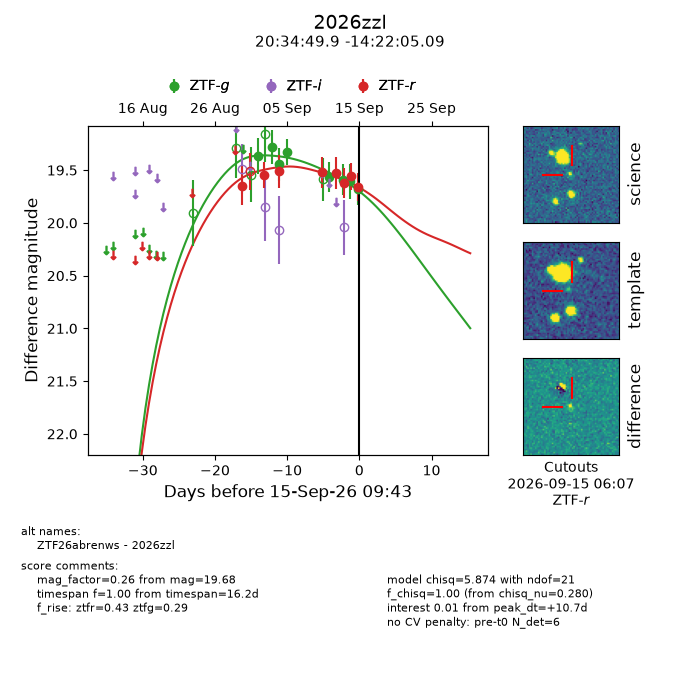
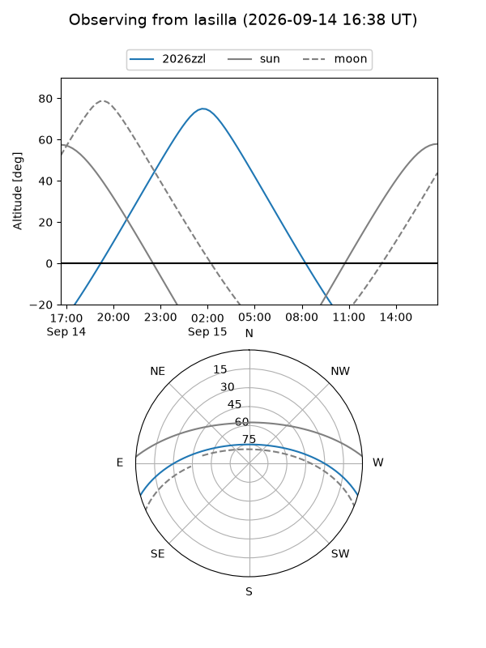
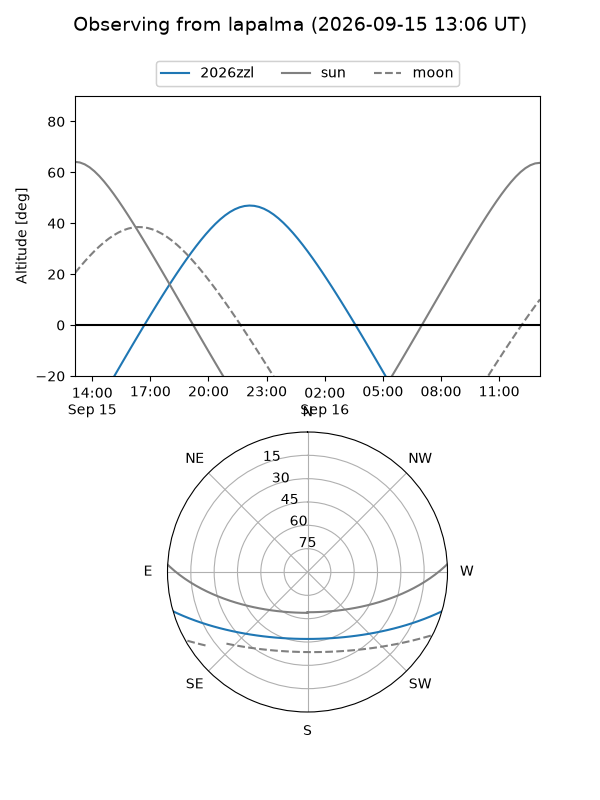
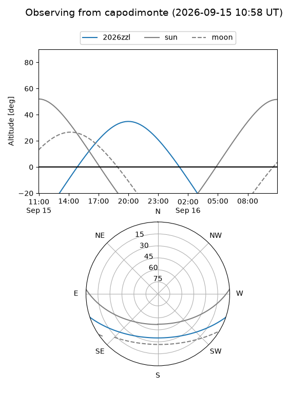
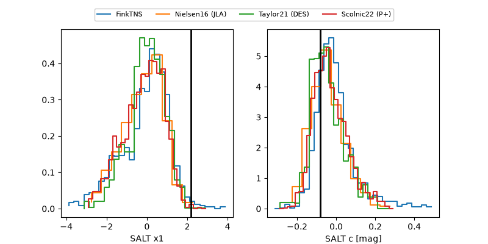

2026zzl
Target 2026zzl at 2026-09-15 09:45
Aliases and brokers:
FINK-ZTF: ztf.fink-portal.org/ZTF26abrenws
Lasair-ZTF: lasair-ztf.lsst.ac.uk/objects/ZTF26abrenws
ALeRCE-ZTF: alerce.online/object/ZTF26abrenws
YSE-PZ: ziggy.ucolick.org/yse/transient_detail/2026zzl
TNS name: wis-tns.org/object/2026zzl
Direct TNS query: direct search
alt names
ZTF26abrenws (ztf,fink_ztf)
2026zzl (tns,yse)
Coordinates:
equatorial (ra, dec) = 308.7078,-14.36808
equatorial (HMS+DMS) = 20:34:49.88,-14:22:05.09
galactic (l, b) = (31.0750,-29.27766)
Flags:
TNS type: nan
peak dt: +10.7
Photometry:
last ztfg=19.68, ztfr=19.66
8 ztfg, 8 ztfr detections
Lightcurve

Visibility



Additional plots
